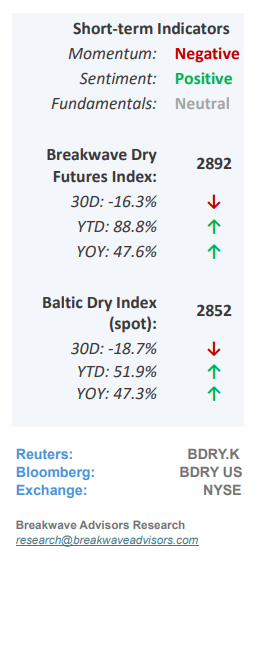
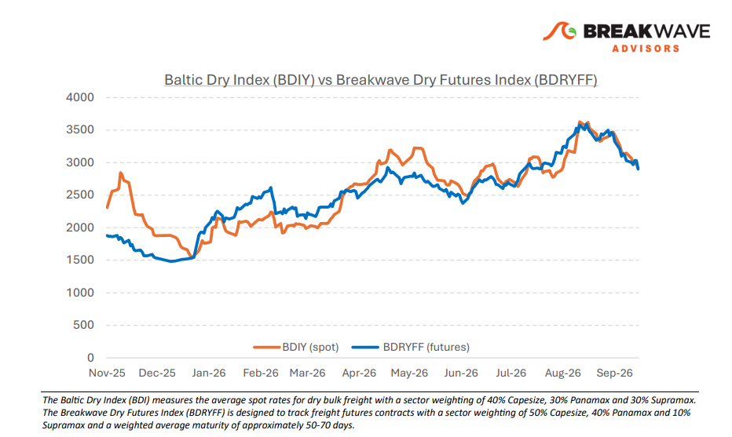
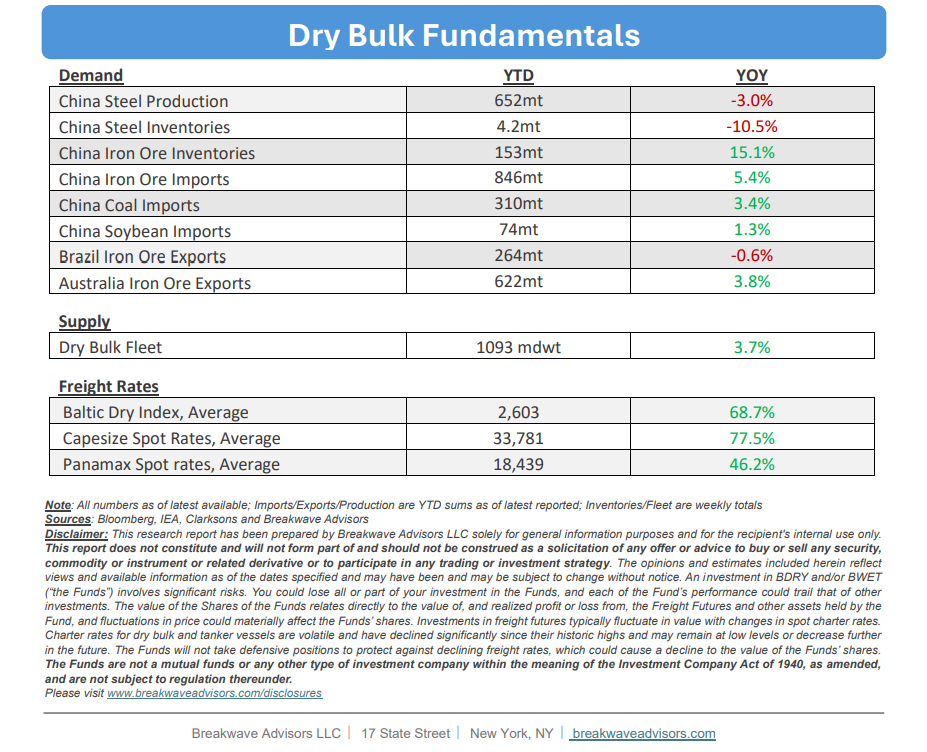

•Capesize Spot Rates Hit Two-month Lows– Although Capesize spot rates havedeclined by approximately $20,000from their early-September multi-year highs, they remain comfortably above the $30,000 threshold, representing a 40% yearover-year increase. This recent retreat likely stems from iron ore transportation costs hitting a decade-high percentage of the commodity's price, which has subsequentlystifled inquiry from smaller, cost-constrained miners.However, elevated futures trading at a premium to spot rates (contango structure) indicate widespread market optimism that this downturn is temporary. Given persistent global operational inefficiencies that continue to constrain vessel supply,further significant declinesremain unlikelyin the near term. While the market's underlying confidence does not suggest this could be the precursor to a more meaningful structural shift rather than a standard correction, a neutral, wait-and-see stance is recommended until fourth-quarter demand andongoing geopolitical developmentsprovide clearer direction while the elevated orderbook looms as a longer-term headwind in a market that is characterized by significant optimism given the record high freight levels across all shipping.

•Iron Ore Exports out of West Africa Slowly Increase– Although Brazil remains the dominant supplier of Atlantic iron ore, a gradual expansion of West African export volumes is steadily capturing regional market share. Propelled by the ongoing ramp-up of the Simandou project,West Africa is projected to secure an approximate 15% shareof regional iron ore Capesize exports in the third quarter. While near-term shifts are driven by transitory factors, including adverse weather and margin compression among smaller Brazilian miners, the data indicates an underlying structural transformation. Although a comprehensive reallocation of market share will require several years to materialize, this development willinfluence the Capesize market for the foreseeable future,even though the definitive impact on tonne-mile demand remains minimal due to relative shipping distances.
•Our Long-term View– The last few years have been characterized by increased geopolitical uncertainty. Going forward, we expect such events to continue to affect global trade and have a meaningful impact on effective vessel supply. Combined with the potential for a multi-year cyclical rebound in China’s economic activity following the recent economic turmoil, dry bulk shipping should experience higher volatility on top of a secular tightness driven by stable bulk commodity demand and rather steady but elevated fleet growth.


Subscribe: